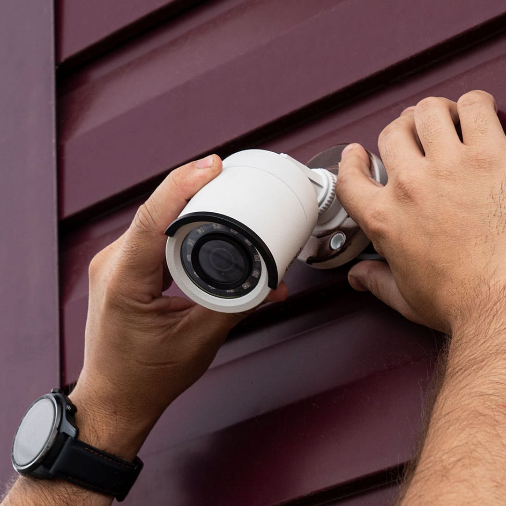

Marzo 2024 - Tiempo de lectura: 5 min.
¿Por qué mi cámara de seguridad se ve borrosa?
Las cámaras de seguridad nos ayudan a mantener nuestro hogar o negocio vigilado para alertar sobre cualquier posible amenaza de manera oportuna. Sin embargo, muchas personas no se animan a contratar un sistema de seguridad porque temen pagar en vano o que aunque tengan acceso a las grabaciones, éstas no les sirvan de nada.
Si ya tienes cámara de seguridad y te has preguntado “por qué se ve borrosa”, hay varios factores que podrían
estar influyendo en el buen desempeño de tu equipo. Considera que existen varios tipos de cámaras, algunas sirven para exterior y otras sólo para interior. Tal vez ese sea el primer error que estás cometiendo.
Las cámaras de seguridad pueden sufrir cambios de temperatura que afectan su desempeño, por eso es necesario usar la correcta en cada sitio.
¿Por qué las cámaras de seguridad tienen tan mala calidad?
Por lo general, las cámaras de seguridad están conectadas a dispositivos de grabación de video (DVR o NVR) y tienen acceso a discos duros en donde almacenan las imágenes que obtiene la cámara. Para que las imágenes no sean de
mala condición, es necesario no usar la calidad más baja.
En el caso del CCTV, las imágenes de estas cámaras de seguridad pueden parecer granulosas o de baja calidad por la resolución y compresión del archivo. Es
importante tener muy claro el propósito para el que se está requiriendo este servicio.

Imagen ilustrativa
¿Cómo saber si una cámara de seguridad está dañada?
Existen varias señales que podrían indicar fallas en la cámara de seguridad:
- Imágenes dobles.
- Baja resolución.
- Interferencia.
- Lente equivocado.
Es importante señalar que las cámaras de seguridad y cualquier otro dispositivo electrónico necesitan cuidado y mantenimiento para su buen funcionamiento.
¿Cuál es la mejor resolución de una cámara de seguridad?
Existen diferentes resoluciones de megapíxeles y conforme sea mayor el grado de resolución, el costo del equipo será más elevado. Si decides elegir una cámara de menor costo, las que tienen 0,3 megapíxeles pueden ser una buena alternativa;
aunque no brindan los resultados claros que buscas ante una emergencia real.
Por lo general, suelen colocarse dispositivos con resolución mayor a 1 megapíxel, considerada alta definición. Si se usan dispositivos con mayor
resolución, entran en la fama de ultra alta definición.
Es importante conocer un poco más sobre los sistemas de seguridad y los factores que influyen para que tengan una buena o mala resolución. Podrías pensar que
invertir en tu seguridad es demasiado, pero a la larga se convierte en un gasto que mantiene protegido a quien más amas.